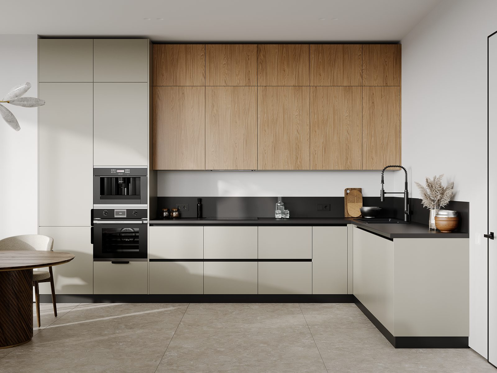

КУХНИ И ШКАФЫ · ПРОЕКТИРОВАНИЕ ОНЛАЙНВаша кухня.
Ваша кухня.
Начнём с проекта.
Выберите коллекцию, обсудите планировку и получите расчёт онлайн. Изготовление кухни, доставка и сборка под ключ.
Обсудить мой проект
МАТЕРИАЛЫ И РЕШЕНИЯУдобство.
Удобство.
Внутри каждого ящика.
Расположение техники, наполнение секций и место для посуды. В проекте согласуем не только фасады, но и то, как вы будете пользоваться кухней.
Рассчитать мой проект